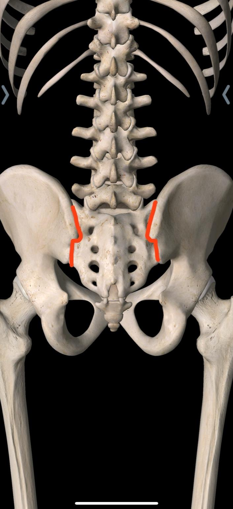

Sacroilitis
La sacroilitis es la inflamación de una o ambas articulaciones sacroilíacas, ubicadas entre el sacro y los huesos de la pelvis. Es una causa frecuente de dolor en la parte baja de la espalda y glúteos.

¿Qué es la sacroilitis?
Es la inflamación de las articulaciones sacroilíacas, que conectan la columna con la pelvis. Puede afectar una o ambas articulaciones y producir dolor profundo en la región glútea, que a veces se irradia hacia la cadera o la parte posterior del muslo.

Vista anatómica de las articulaciones sacroilíacas.
¿Con qué frecuencia ocurre?
- La sacroilitis representa aproximadamente entre el 15% y el 30% de los casos de dolor lumbar mecánico crónico.
- Es más frecuente en adultos jóvenes y de mediana edad.
- Puede asociarse a espondiloartritis, artrosis o sobrecarga mecánica.
Síntomas más comunes
- Dolor en región glútea, cadera o parte baja de la espalda.
- Dolor que empeora al permanecer de pie o sentado mucho tiempo.
- Molestia al subir escaleras, caminar largas distancias o girar en la cama.
- Rigidez matutina en la parte baja de la espalda.
- En algunos casos, dolor que se extiende hacia la parte posterior del muslo.
Causas frecuentes
- Espondiloartritis (como espondilitis anquilosante).
- Artrosis de las articulaciones sacroilíacas.
- Embarazo y cambios en la pelvis.
- Traumas o caídas sobre la región glútea.
- Diferencias en la longitud de las piernas o alteraciones de la marcha.
- Infecciones (raro, pero posible).
¿Cómo se diagnostica?
- Historia clínica y exploración física específica de las articulaciones sacroilíacas.
- Pruebas de provocación del dolor (maniobras sacroilíacas).
- Rayos X, tomografía o resonancia magnética de pelvis.
- Bloqueo diagnóstico de la articulación sacroilíaca guiado por imagen.
Tratamientos médicos y rehabilitación
Medicamentos
- Antiinflamatorios y analgésicos.
- Relajantes musculares si hay contractura asociada.
- En casos de espondiloartritis: tratamiento reumatológico específico.
Rehabilitación
- Fisioterapia para mejorar movilidad pélvica y lumbar.
- Ejercicios de fortalecimiento de glúteos y musculatura del core.
- Corrección de alteraciones de la marcha o de la postura.
- Educación para evitar sobrecarga en la articulación.
Procedimientos intervencionistas
Se consideran cuando el dolor es persistente, limita las actividades diarias o no responde adecuadamente al tratamiento convencional.
- Bloqueo de articulación sacroilíaca guiado por fluoroscopía o ultrasonido.
- Radiofrecuencia de los nervios que inervan la articulación sacroilíaca.
- Infiltraciones con esteroides en casos inflamatorios seleccionados.
- Procedimientos regenerativos (por ejemplo, PRP) en indicaciones específicas.
 Procedimiento intervencionista en la articulación sacroilíaca guiado por imagen.
Procedimiento intervencionista en la articulación sacroilíaca guiado por imagen.
Prevención y autocuidado
- Mantener un peso adecuado para evitar sobrecarga en la pelvis.
- Fortalecer glúteos, abdomen y espalda baja.
- Evitar estar sentado o de pie por periodos muy prolongados sin pausas activas.
- Corregir diferencias importantes en la longitud de las piernas (plantillas).
- Consultar tempranamente si el dolor glúteo es persistente.